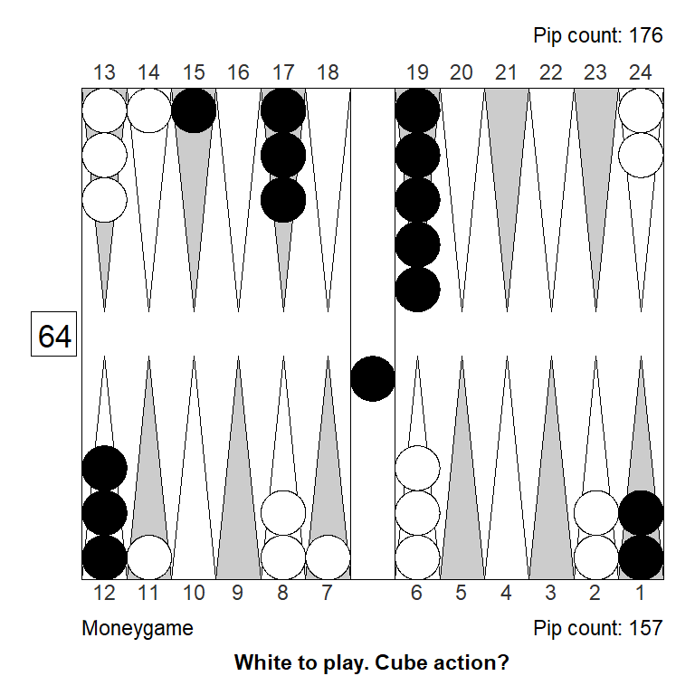
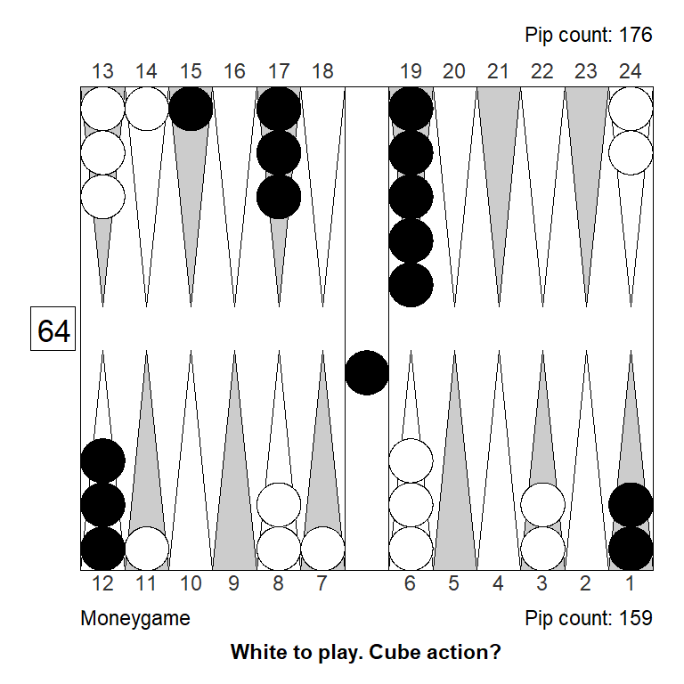
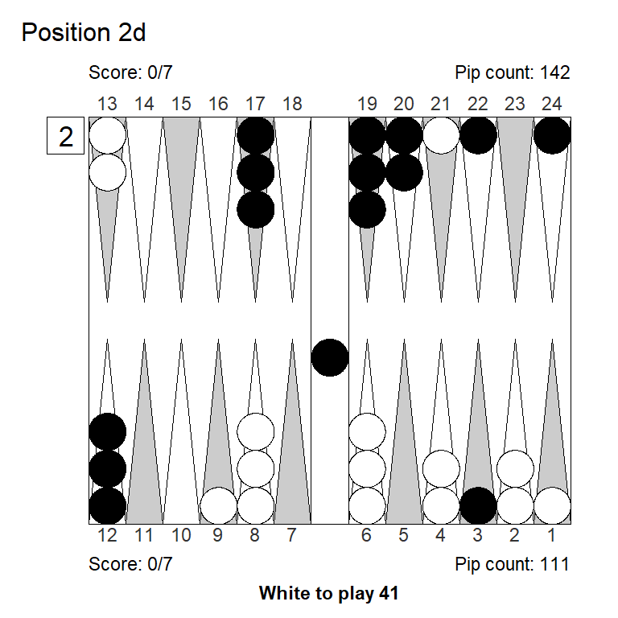
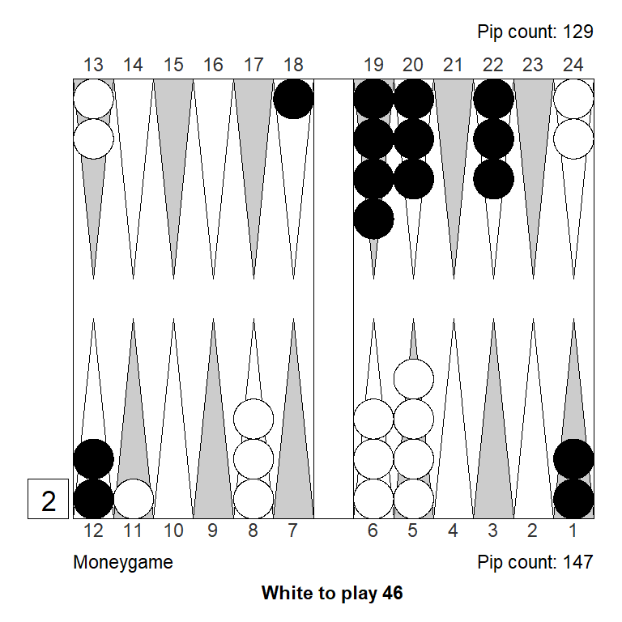
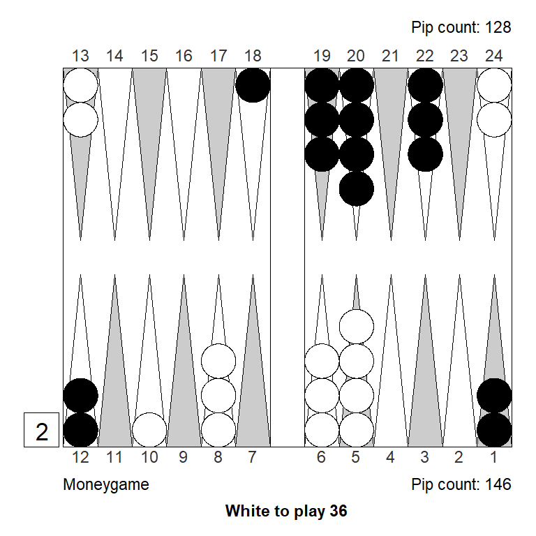

Milestones III, 2023
Why this?
This is a collection of positions from the Milestones III tournament in Denmark, 2023, where players compete for wins and for best performance rating (PR). Every player gets to play 15 7-point matches. I will collect about one problem from each of my own matches: Positions where I made some mistake, that I found difficult, surprising or otherwise interesting.
In some cases, I show also variations, to better understand what is going on. I will organize the positions only into cube actions and checker plays, adding more as they come.
Cube actions
Position 1
Over the board, this looked to me like a strong double. White has an excellent forward structure, a fat racing lead, and a 4-point prime that can be extended from the back in relative safety, since Black has two checkers on the bar. The only weakness is White’s blot on the ace point, but getting hit is not a big deal, so it can’t be much of a liability.
Meanwhile, Black has made almost no progress; only the 11-point is made.
My guess was a strong double, and a smallish take for Black. It is, however, the other way around: White has only a small double, Black has a huge take:
Cubeful Equities:
No double: +0,690 (-0,047)
Double/Take: +0,736
Double/Pass: +1,000 (+0,264)
1296 Games rolled with Variance Reduction.
Moves: 3-ply, cube decisions: XG RollerLooking at the outcome probabilities, we see that White does have a big gammon threat, but also that Black wins more than a third of the games:
| Regular | Gammon | Backgammon | Sum | |
|---|---|---|---|---|
| Player wins | 0.292 | 0.340 | 0.024 | 0.656 |
| Opponent wins | 0.265 | 0.072 | 0.007 | 0.344 |
| Sum | 0.557 | 0.412 | 0.031 | 1.000 |
One thing that I might have overlooked here, is that White has very few real crushing frequencies, because he’s a little short on ammo. Black will almost always make some kind of anchor, and then have some kind of counter play agains White’s three back checkers.
To see if this result is match-score related, let’s check the same position for money, and while we’re at it, also check if XG Roller ++ (fast, truncated rollouts), gets it right, compared to a full rollout at strong settings.

Cubeful Equities:
No double: +0,800 (-0,120)
Double/Take: +0,920
Double/Pass: +1,000 (+0,080)
1296 Games rolled with Variance Reduction.
Moves: 3-ply, cube decisions: XG Roller
Analyzed in XG Roller++
No double: +0,784 (-0,134)
Double/Take: +0,918
Double/Pass: +1,000 (+0,082)For money, the double is bigger, and the take is smaller, so more in line with my first impression. It appears that the 2-point lead for White does make a difference.
But why?
The next table shows Black’s takepoints under different assumption: No cube and no gammons (like a last-roll position); no cube and gammon rates from the table above; and finally taking both cube and gammons into account.
| Cube assumptions | Moneygame takepoint | 7-away, 5-away takepoint | Difference |
|---|---|---|---|
| Dead cube, no gammons | 0.250 | 0.240 | -0.010 |
| Dead cube, gammons | 0.384 | 0.382 | -0.002 |
| Both cube and gammons | 0.343 | 0.304 | -0.039 |
The last-roll takepoint is not too different from money at this score, and it also doesn’t make much difference to factor in gammons. When we consider possible recubes, however, we see that Black’s takepoint at the score, is somewhat lower than it would be for money.
This is because he’ll redouble more aggressively at the score. We can see why, by looking at White’s takepoints for a potential recube, assuming the same gammon frequencies:
| Cube assumptions | Moneygame takepoint | 5-away, 7-away recube takepoint | Difference |
|---|---|---|---|
| Dead cube, no gammons | 0.250 | 0.266 | 0.016 |
| Dead cube, gammons | 0.264 | 0.333 | 0.069 |
| Both cube and gammons | 0.236 | 0.312 | 0.076 |
So, it looks like a good part of my flawed evaluation of the original position, comes from the fact that Black can take somewhat more aggressively at the score; hence White needs more to have a really strong double.
The reason for Black’s lower takepoint at the score, lies mostly in the potential redouble in positions where gammons are possible: It’s hard for White to accept a 4-cube at 5-away 7-away, where a gammon loss means is much more costly than a gammon win.
Still, the position is also a clear take for money, so there’s some reconsideration to do in that department too. What will it take to turn the position into a really tough take for money?
If we activate the awkward spare on the ace-point, we suddenly have a big pass. Perhaps not surprising, since the liability turns into a big asset. But still:

Analyzed in XG Roller++
Cubeful Equities:
No double: +0,979 (-0,021)
Double/Take: +1,273 (+0,273)
Double/Pass: +1,000Even if we put the spare checker in a less ideal place, we still get a double/pass:

Analyzed in XG Roller++
Cubeful Equities:
No double: +0,929 (-0,071)
Double/Take: +1,045 (+0,045)
Double/Pass: +1,000That spare has to move out of the action, to get to a marginal pass:

Analyzed in XG Roller++
Cubeful Equities:
No double: +0,913 (-0,087)
Double/Take: +1,011 (+0,011)
Double/Pass: +1,000Finally, we get to a decent take, noting that Black is no longer far behind in the race:

Analyzed in XG Roller++
Cubeful Equities:
No double: +0,874 (-0,072)
Double/Take: +0,947
Double/Pass: +1,000 (+0,053)One way to see how bad White’s ace-point blot is, is to consider the original position after something like 31: 24/20. Now, most aces, like 21, 31, 41, and 51, are below-average rolls for Black, even though they hit. White is hoping to get hit (except with 41 and 11, trying for a high anchor); that’s how bad the blot is.
Another experiment would be to improve White’s opportunity to extend the prime from the back. A one-pip change can be huge: We go from a clear take to a pretty clear pass:

Analyzed in XG Roller++
Cubeful Equities:
No double: +0,856 (-0,144)
Double/Take: +1,059 (+0,059)
Double/Pass: +1,000Another change in the same spirit is to bring in another builder for that important 9-point. It has about the samme effect as slotting:

Analyzed in XG Roller++
Cubeful Equities:
No double: +0,854 (-0,146)
Double/Take: +1,065 (+0,065)
Double/Pass: +1,000A final one-pip change that has a rather dramatic effect, is to just semi-active the ace-point checker so it easier becomes part of a prime, and is both easier and more attractive to cover. Again, we go from a clear take to a clear pass:

Analyzed in XG Roller++
Cubeful Equities:
No double: +0,849 (-0,151)
Double/Take: +1,062 (+0,062)
Double/Pass: +1,000Summing up:
- A two-point lead in a 7-point match matters, especially if you might face a recube when gammons are still possible.
- What seems to be a strong positional advantage, might not be so strong if there are also liabilities.
- An awkward ace-point blot can be a rather big liability
- Small things matter: One pip can make a it much easier to turn a strong position into a winning position.
Position 2

This is another example of blitz that could work as a bluff double: It might look like White has a strong blitz going, but in fact the take is easy, and this is not even a double. In practice, it’s not impossible to get a pass. (Okay, I passed this, I admit.)
Analyzed in XG Roller++
Cubeful Equities:
No double: +0,579
Double/Take: +0,534 (-0,045)
Double/Pass: +1,000 (+0,421)At the match score, the error from passing is gigantic, for money it is smaller but still big:

Analyzed in XG Roller++
Cubeful Equities:
No double: +0,664 (-0,078)
Double/Take: +0,742
Double/Pass: +1,000 (+0,258)To better understand why this score is so different from money, we can compare the takepoints for money and at the score, using different assumptions:
| Cube assumptions | Moneygame takepoint | 7-away, 5-away takepoint | Difference |
|---|---|---|---|
| Dead cube, no gammons | 0.250 | 0.240 | -0.010 |
| Dead cube, gammons | 0.369 | 0.368 | -0.001 |
| Both cube and gammons | 0.330 | 0.288 | -0.042 |
As in position 1, it is the powerful recube access that makes Black considerable more inclined to take at the score, compare to money game.
Let’s keep the money game variant, and play with features of the position.
The ace-point slots makes all the difference in the world, because it commits White to a blitz. If we turn the slot into a builder White can both blitz or prime, and two strong game plans are much better than one. As a result has a moderate sized pass in the variant below.

Analyzed in XG Roller++
Cubeful Equities:
No double: +0,865 (-0,135)
Double/Take: +1,067 (+0,067)
Double/Pass: +1,000Also, making it a bit easier for White to jump his back checkers, turns the position into just a borderline take.

Analyzed in XG Roller++
Cubeful Equities:
No double: +0,784 (-0,211)
Double/Take: +0,996
Double/Pass: +1,000 (+0,004)In summary, it is the combination of having to jump a prime, without being on the edge, and being committed to a blitz, and being a little short on ammunition, that makes Whites’s position weaker than it might appear.
Position 3



Checker plays
Position 1

Here, White has four reasonable options:
- 13/11, 13/8, clearing the midpoint
- 11/4, placing a spare on the 4-point
- 11/6, 11/9, with spares on the 6- and 9-points
Unwilling to break the midpoint as long as reasonable alternatives existed, White played 11/4, wanting to leave fewer shots and cover more outfield, compared to 11/6, 11/9.
It is not hard to accept that this can be a mistake:
11/6, 11/9 also breaks the 11-point, but is more compact. It adds 63 to build the 3-point, slots the 9-point which could be useful, and only leaves 44 as an extra shot (a joker anyway).
13/11, 13/8, clearing the midpoint, puts full emphasis on White’s all-important 5-point, leaves no shot, and makes it more dangerous for Black to split with a roll like 42.
The interesting part is not that XG picks 13/11, 13/8, but the magnitude of the mistake is remarkable; anything but breaking the midpoint is a blunder:
XG Roller++
1. 13/11 13/8 eq:+0,026
2. 11/9 11/6 eq:-0,065 (-0,090)
3. 11/4 eq:-0,131 (-0,157)The key is, that after the top-play, 9 rolls make a full 5-prime, after the second best, only 4 rolls do that. Some rolls, 31 and 43, makes the 5-point but breaks the 8, which is not as strong. So the extra builders on the 11- and 8-points have real value.
Note that White should break the 13-point with a lot of rolls: 54, 43, 62, 42, 32, 51, and the 52 from the actual position.
51 deserves special mention, the funny looking 13/7 is probably slightly better than the aggressive slot, 11/5, which accomplishes the same thing, but with a different risk/reward ratio: A lot more shots, and a lot more ways to make the 5-point if missed.
The shots left in the outfield is not the main concern: 43 should be played 13/10 13/9 with lots of builders at the cost of 5 shots; 43: 11/8, 11/7 would be a blunder even though it looks flexible.
Likewise, with 32, 13/11, 13/10 is a lot better than 11/9, 11/8, since it creates four active builders for the 5-point rather than just three.
Summing up, making the 5-point and a 5-point-prime is likely to win the game, and White can easily afford to break the midpoint and leave a few fly-shots to increase the probability of achieving that goal.
Builders win out – if they aim at something important, and if they are not too likely to get hit.
Positions 2a-2d



These four positions share a common theme: The right play is hard to find for those of us who learned, back in the day, that the one thing you must never do in backgammon, is to make the ace-point.
Position 2a
XG Roller++
1. 5/1* 3/1 eq:+0,266
2. 8/6 5/1* eq:+0,215 (-0,051)
3. 7/1* eq:+0,204 (-0,062)Position 2b
XG Roller++
1. 6/1* 2/1 eq:-0,324
2. 8/7 6/1* eq:-0,361 (-0,037)
3. 24/23 6/1* eq:-0,413 (-0,089)Position 2c
XG Roller++
1. 8/6 2/1 eq:+0,178
2. 8/5 eq:+0,130 (-0,048)Position 2d
XG Roller++
1. 16/1 eq:+0,767
2. 8/3* eq:+0,754 (-0,013)
3. 9/5 6/5 eq:+0,723 (-0,044)In both cases White must hit, he has the stronger board and while it is not good to get hit back, Black can also do some damage if left alone.
After hitting on the ace point, anything but switching point just leave another blot for no particular gain.
Position 3

This is a technical play, where it is tempting to assume that all reasonable plays are close. Actually, they are not so close.
Obviously the play is all about getting off the gammon. Over the board, White played 19/9, thinking that it hardly mattered, as long as he made crossovers and avoided wastage by playing past the 6-point.
The gammon race is close. The probabilities that White will lose a gammon after the five best plays, are listed below.
1. 13/7 10/6 53.93%
2. 19/13 10/6 55.07%
3. 19/15 13/7 56.63%
4. 19/9 57.74%
5. 13/9 13/7 58,07%
1296 Games rolled with Variance Reduction.
Moves: 3-ply, cube decisions: XG RollerThe actual play, 19/9, increases the risk of getting gammoned, by almost 4 percentage points, so for money that would be about a 0.04 mistake, costing 4 percent of the cube value – a significant mistake.
Why so much?
The main concept in getting-off-the-gammon problems is to avoid “wasting” pips, by playing past the 6-point, those pips don’t help saving the gammon. Playing 10/4 with the 4 does just that, so must be right. Indeed, 10/4 is part of both top plays.
This is quite important, especially when the gammon race is close.
After 10/6 with the 4, 13/7 is best with the 6, simply because it creates a smaller stack: Two checkers on the 7- and 13-point, is better than one and four checkers.
Position 4

This one is from the same game as position 3, but Black has rolled well, so White is now a big favorite to get gammoned. The 31 White has to play is a little funny, because the correct play seem to violate basic principles for getting off the gammon: Make crossovers; don’t waste pips.
The right play is 8/7 8/5, wasting a pip and failing to make two crossovers.
A little reflection shows that White needs to cater to specific doubles. After any play White needs 7 or 8 crossovers in three rolls, so one of roll has to be a double to save the gammon. After 8/7 8/5 any double makes 4 crossover, which is not true for the other plays, so that is the winner.
It’s true, that if White makes two crossovers now, with 13/11 8/5, he only needs to generate three crossovers from future double. But 11 fails to do even that, so it loses a tiny bit there.
The other two-crossover play, 20/17 13/12, also fails on 11, but plays worse on 55 and 44 as well.
1. 8/7 8/5 89,63%
2. 13/12 8/5 89,78%
3. 20/19 8/5 90,42%
4. 8/4 90,99%
5. 20/16 91,03%
6. 20/19 13/10 91,09%
7. 20/17 13/12 91,39%
1296 Games rolled with Variance Reduction.
Moves: 3-ply, cube decisions: XG RollerPosition 5

This is a tough play. White has two reasonable but very different plays: Hitting with 24/18*/14, or priming with 13/7 11/7.
Hitting has big upsides and big downsides. Black hits back on fully 18 rolls, but also has some bad rolls, 4 dancing rolls, and an additional 8 bad sixes. Some hitting rolls, like 51, aren’t too happy either.
Priming could work, since White is behind in the race. It leaves Black a few immediate horror rolls, 55 and 44, but also some pretty strong hitting aces.
In the end, priming comes out slightly better:
1. 13/7 11/7 eq:+0,417
2. 24/18* 18/14 eq:+0,401 (-0,016)
3. 24/18* 11/7 eq:+0,239 (-0,178)Let’s have a look at the moneygame variant, together with a very minimal one-pip modification:


XG Roller++
1. 13/7 11/7 eq:+0,413
2. 24/18* 18/14 eq:+0,405 (-0,008)XG Roller++
1. 24/18* 18/14 eq:+0,367
2. 13/7 11/7 eq:+0,343 (-0,024)For money priming is still right, but now super close; the two plays are basically a photo finish.
But why the (small) difference compare to 7-away, 7-away score? The reason is, that the hitting play loses a bit more gammons than the priming play. At the score, the gammon value with the cube at two is 0.54, compare to 0.5 for money, so gammons are slightly more costly. For that reason, the hit is a bit more attractive for money, making the two plays even closer.
The real mystery, however, is the variation on the right, where one Black checker from the 5-point has moved back a pip to the 6-point. This seemingly very minor modification makes the hitting play correct by a small but a meaningful amount: 0.024.
The reason is, probably, that the change is not so small after all. Note that the equities in the second position are quite a bit lower, so White is significantly worse off. For that reason, there’s a bit less to lose, when the hitting play backfires.
Also, and perhaps more importantly, in a priming battle Black can use the extra spare on the 6-point to play future 4s, since that number is blocked on the other side of the board. For example, imagine White makes the priming play in both variations, and Black then rolls 54, making the 2-point. Now, the position with two spares on the 5-point really looks a lot worse than the variant with a spare on each of the 5- and 6-point. (And it is, evaluations confirm.)
Bottom line is that Black is better set-up for priming in the right-hand position, so White should chose another gameplan.
Small differences often are not so small.
Let’s do one more exercise with this position, and look at how a few analogous problems evaluate:

XG Roller++
1. 13/7 8/7 eq:+0,394
2. 24/23 24/18* eq:+0,367 (-0,027)
3. 24/18* 18/17 eq:+0,327 (-0,067)
4. 24/18* 11/10 eq:+0,314 (-0,080)
XG Roller++
1. 13/7 9/7 eq:+0,411
2. 24/18* 18/16 eq:+0,302 (-0,109)
3. 9/3 5/3 eq:+0,290 (-0,121)
XG Roller++
1. 24/21 24/18* eq:+0,427
2. 13/7 10/7 eq:+0,413 (-0,015)With a 61 to play, rather that a 64, priming performs better. Not so much because priming is better with 61, but because the alternative hitting plays are all worse than the hit-and-run-almost-home play available with 64.
In the second variation, with the same kind of choice for a roll of 62, priming is now a stand-out. Both because hitting and running still doesn’t run as far, and (I think more importantly) because hitting leaves an additional 2 very dangerous returns from the bar: 63 and 54.
In the final variation, hitting is slightly right, likely because the 10-point would be valuable to make also, so that checkers works also as a slot. (Which may be covered with a 5 from the 15-point.)